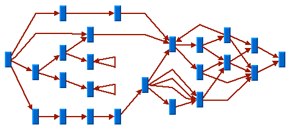
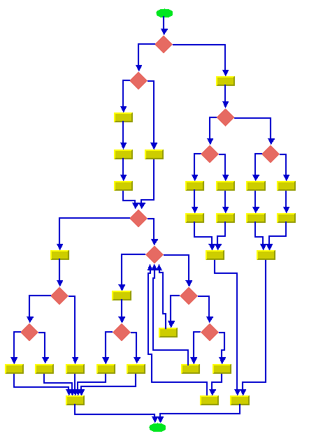
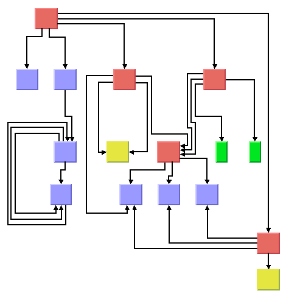
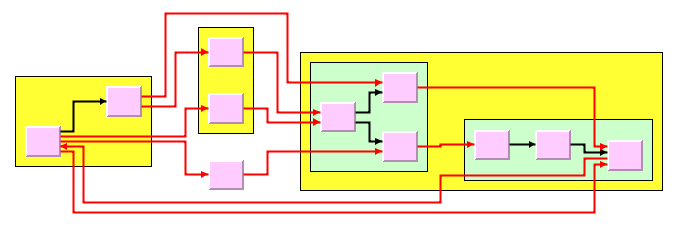

IBM
ILOG Elixir Enterprise
V3.0 3.0
>
Using graph layout algorithms
>
Layout algorithms
>
Hierarchical Layout (HL)
>
General information on the HL
INDEX
|
PREVIOUS
NEXT
General information on the HL
HL samples
Here are some sample drawings produced with the Hierarchical Layout:

Sample layout with self-loops, multiple links, and cycles

Flowchart with orthogonal link style

Sample layout with ports and orthogonal link style

Sample layout of nested graph in recursive layout mode
What types of graphs suit the HL?
Any type of graph, as follows:
Preferably graphs with directed links.
connected graphs and disconnected graphs
planar graphs and nonplanar graphs
nested graphs with intergraph links
Application domains for the HL
Application domains for the Hierarchical Layout include:
Electrical engineering (logic diagrams, circuit block diagrams)
Industrial engineering (industrial process diagrams, schematic design diagrams)
Business processing (workflow diagrams, process flow diagrams, PERT charts)
Software management/software (re-)engineering (UML diagrams, flowcharts, data inspector diagrams, call graphs)
Database and knowledge engineering (database query graphs)
CASE tools (designs diagrams)
Current section
Hierarchical Layout (HL)